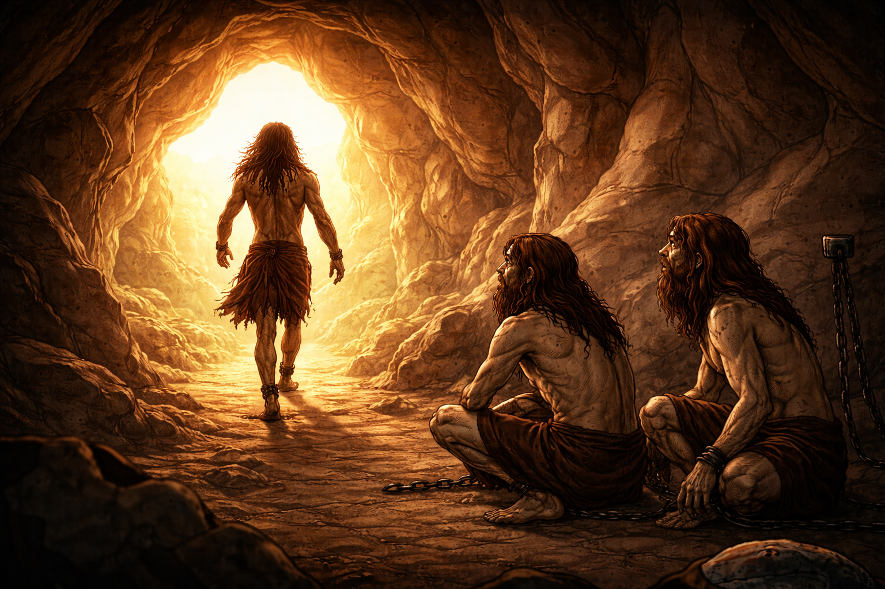

Decides salir al exterior, mientras que caminas hacia la salida, recuerdas la explicación que los demás te dieron, pero no te parece suficiente como para explicar lo que estas viviendo, ya hasta parece muy tarde para arrepentirse. Solo puedes ver una luz muy brillante al final del túnel y los demás te miran asombrados, pero sin ganas de seguirte o detenerte.
Imagen generada a partir de la principal con ChatGPT 5.2 Instant